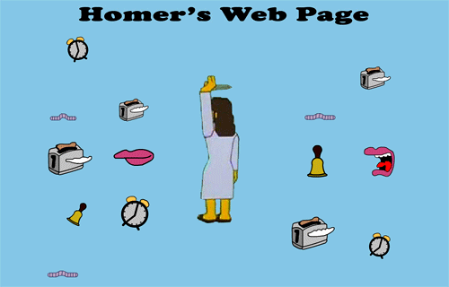

Aprende las bases, desarrolla tu futuro|
Aprende las bases, desarrolla tu futuro|
Mi primer recuerdo de usar un ordenador fue con MS-DOS cuando tenía 5 años. Mi padre me enseñó a usar la terminal para instalar juegos y programas. ¿Recuerdas los primeros prince of persia? A partir de ahí, mi curiosidad por la tecnología no ha parado de crecer.

A los 15 ya llevaba un largo recorrido de toquetear scripts de juegos, ve√≠a como se creaban los mods de DOOM y me preguntaba c√≥mo se hac√≠an, para qu√© serv√≠an todos esos archivos de texto o los .bat. Empec√© a estudiar html por mi cuenta y Flash, y as√≠ salieron mis primeras páginas web y juegos. No te creas que hice un juego de la calidad de DOOM üòÖ, eran más bien juegos flash de vestir mu√±ecos, hacer puzzles, point and click y cosas as√≠. Y mis páginas eran mas bien como las de homer Simpson, hasta que me lleg√≥ mi primer cliente serio.
Mi formación fue muy autodidacta hasta que decidí hacer un bootcamp para actualizar mis conocimientos y aprender las tecnologías del mercado. No conformado con eso hice otro bootcamp gratuito de desarrollo web además de incontables cursos de Udemy. Para esa época ya estaba subiendo vídeos a YouTube mostrando lo que aprendía en desarrollo de videojuegos. También me di cuenta de lo gratificante que era enseñar y compartir conocimientos mientras colaboraba en proyectos con mis compis, así que decidí aplicar a un puesto de formador.
A día de hoy ya he trabajado en decenas de proyectos como freelance y para empresas, he dado más de 4000 horas de cursos y he formado a cientos de estudiantes de forma presencial y telemática. Darme cuenta de que mis estudiantes valoran mi trabajo y viendo casos de éxito me llena de orgullo y me motiva a seguir aprendiendo y enseñando. Espero que disfrutes de mis cursos y que te ayuden también a ti a alcanzar tus metas.
Te mando un abrazo y... ¡Sigamos desarrollando!